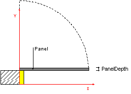

7.1.3.2 IfcDoorPanelProperties
| Propriétés du panneau de porte |
| Festdefinierte Merkmale der Türfüllung / des Türflügels |
A door panel is normally a door leaf that opens to allow people or
goods to pass. The parameters of the door panel define the
geometrically relevant parameter of the panel,
The IfcDoorPanelProperties are used to parametrically
describe the shape and operation of door panels. The parametric
definition can be added solely or additionally to the explicit
shape representation of the door.
The IfcDoorStyle can define doors consisting of more
then one panel. In this case, one instance of
IfcDoorPanelProperties has to be included for each door
panel. The PanelPosition attribute, in conjunction with
the IfcDoorStyle.OperationType attribute, determines to
which panel the IfcDoorPanelProperties apply.
The IfcDoorPanelProperties are included in the list of
properties , given by attribute HasPropertySets of the
IfcDoorStyle. More information about the door panel can be
included in the same list of the IfcDoorStyle using the
IfcPropertySet for dynamic extensions.
HISTORY New entity in IFC2.0.
IFC4 CHANGE Supertype changed to new IfcPreDefinedPropertySet.
Geometry use definitions
The IfcDoorPanelProperties does not hold a geometric representation. However it defines parameters which can be used to create the shape of the door style (which is inserted by the IfcDoor into the spatial context of the project) as shown in Figure 258.
The parameters of the IfcDoorPanelProperties define a standard door panel, including (if given) a proportional width to define non-uniform double swing (or sliding, or folding) doors. The outer boundary of the panel is determined by the occurrence parameter assigned to the IfcDoor, which inserts the IfcDoorStyle. It has to take the lining parameter into account as well.
 |
The depth of the panel (swinging, double-acting, and sliding panels) is defined by the PanelDepth parameter.
|
 |
For door operation types that include more than one panel, the width of (at least) one panel is
given by a normalised ratio measure. It determines the width of that panel, which is defined as a ratio of the overall width of the door opening.
|
|
Figure 258 — Door panel properties |
XSD Specification:
<xs:element name="IfcDoorPanelProperties" type="ifc:IfcDoorPanelProperties" substitutionGroup="ifc:IfcPreDefinedPropertySet" nillable="true"/>
<xs:complexType name="IfcDoorPanelProperties">
<xs:complexContent>
<xs:extension base="ifc:IfcPreDefinedPropertySet">
<xs:sequence>
<xs:element name="ShapeAspectStyle" type="ifc:IfcShapeAspect" nillable="true" minOccurs="0"/>
</xs:sequence>
<xs:attribute name="PanelDepth" type="ifc:IfcPositiveLengthMeasure" use="optional"/>
<xs:attribute name="PanelOperation" type="ifc:IfcDoorPanelOperationEnum" use="optional"/>
<xs:attribute name="PanelWidth" type="ifc:IfcNormalisedRatioMeasure" use="optional"/>
<xs:attribute name="PanelPosition" type="ifc:IfcDoorPanelPositionEnum" use="optional"/>
</xs:extension>
</xs:complexContent>
</xs:complexType>
EXPRESS Specification:
|
ENTITY IfcDoorPanelProperties
|
|
|
| ApplicableToType | : | (EXISTS(SELF\IfcPropertySetDefinition.DefinesType[1]))
AND
(
('IFCSHAREDBLDGELEMENTS.IFCDOORTYPE' IN TYPEOF(SELF\IfcPropertySetDefinition.DefinesType[1]))
OR
('IFCARCHITECTUREDOMAIN.IFCDOORSTYLE' IN TYPEOF(SELF\IfcPropertySetDefinition.DefinesType[1]))
); |
|
 EXPRESS-G diagram
EXPRESS-G diagram
Attribute Definitions:
| PanelDepth | : |
Depth of the door panel, measured perpendicular to the plane of the door leaf.
|
| PanelOperation | : |
The PanelOperation defines the way of operation of that panel. The PanelOperation of the door panel has to correspond with the OperationType of the IfcDoorStyle by which it is referenced.
|
| PanelWidth | : |
Width of this panel, given as ratio relative to the total clear opening width of the door. If omited, it defaults to 1. A value has to be provided for all doors with OperationType's at IfcDoorStyle defining a door with more then one panel.
|
| PanelPosition | : |
Position of this panel within the door. The PanelPosition of the door panel has to correspond with the OperationType of the IfcDoorStyle by which it is referenced.
|
| ShapeAspectStyle | : |
Pointer to the shape aspect, if given. The shape aspect reflects the part of the door shape, which represents the door panel.
DEPRECATION The attribute is deprecated and shall no longer be used, i.e. the value shall be NIL ($).
|
Formal Propositions:
| ApplicableToType | : |
The IfcDoorPanelProperties shall only be used in the context of an IfcDoorType.
NOTE The deprecated entity IfcDoorStyle is applicable as well.
|
Inheritance Graph:
|
ENTITY IfcDoorPanelProperties
|
 Link to this page
Link to this page